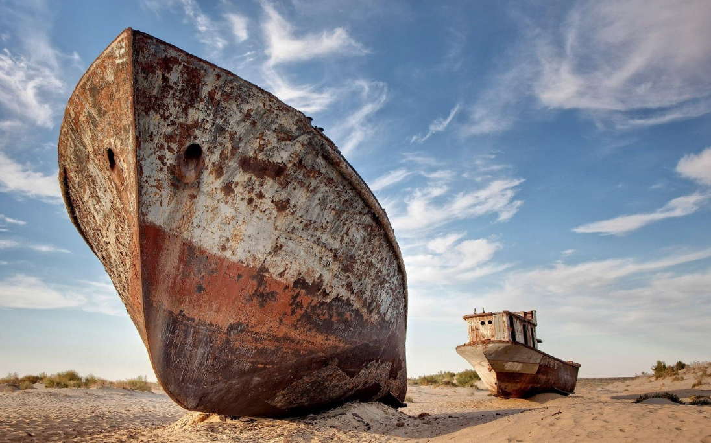

Aral – A Symbol of Ecological Disaster and Revival
The Aral is not just the name of what was once the fourth largest lake in the world, but also a region that has become a symbol of one of the greatest environmental disasters of the 20th century. Due to Soviet-era irrigation projects, the lake has almost completely dried up, leaving behind salt-covered land and a range of social problems.
- Past Area: Over 68,000 km²
- Current State: Divided into Small Aral and Large Aral
- Ecosystem: Severely disrupted, but restoration efforts are ongoing
What to See?
- 🌊 Remains of the shoreline and former ports
- 🛳 Ship graveyard in Aralsk
- 📚 Museum of Aral History and Environmental Tragedy
- 📷 Ethno-tourism and photo tours
How to Get There?
📠Aral city, Kyzylorda region
🚆 By train or bus from Kyzylorda (~8 hours)
🚗 By personal vehicle (around 450 km)
Interesting Fact
🧠The Kokaral dam has partially restored the water level of the Small Aral, reviving fishing and local flora.
The Aral is a place of memory, ecological lessons, and hope for nature's recovery 🌍.
PHOTOS

